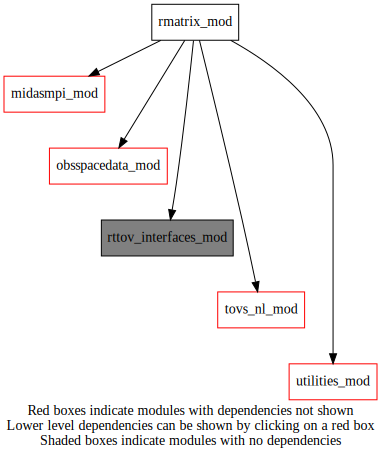
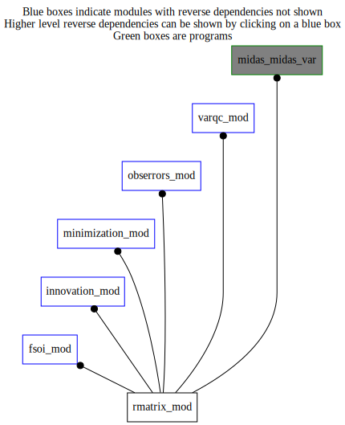

Dependency Diagrams:
 Direct Dependency Diagram¶
 Reverse Dependency Diagram¶
Description
MODULE rMatrix_mod (prefix=’rmat’ category=’2. B and R matrices’)
- Purpose
Module to handle non-diagonal observation-error covariance matrices for assimilation of radiances
Quick access
- Types
- Variables
- Routines
rmat_cleanup(),rmat_init(),rmat_readcmatrix(),rmat_readcmatrixbyfilename(),rmat_rsqrtinverseallobs(),rmat_rsqrtinverseoneobs()Needed modules
rttov_interfaces_mod: MODULE rttov_interfaces_mod (prefix=’’ category=’9. Global interfaces’)
midasmpi_mod: MODULE midasMpi_mod (prefix=’mmpi’ category=’8. Low-level utilities and constants’)
rttov_const(errorstatus_success())
utilities_mod: MODULE utilities_mod (prefix=’utl’ category=’8. Low-level utilities and constants’)
obsspacedata_mod: MODULE obsSpaceData_mod (prefix=’obs’ category=’6. High-level data objects’)
tovs_nl_mod: MODULE tovs_nl (prefix=’tvs’ category=’5. Observation operators’)Types
- type rmatrix_mod/rmat_matrix¶
- Type fields
% listchans (*) [integer ,pointer]
% nchans [integer ]
% rmat (*,*) [real ,pointer]
Variables
- rmatrix_mod/rmat_lnondiagr [logical,public]¶
choose to use non-diagonal R matrix (i.e. non-zero correlations)
Subroutines and functions
- subroutine rmatrix_mod/rmat_init(nsensors, nobtovs)¶
- Arguments
nsensors [integer ,in]
nobtovs [integer ,in]
- Called from
- Call to
- subroutine rmatrix_mod/rmat_readcmatrix(instrument, sensor_id, ichan)¶
- Arguments
instrument (3) [integer ,in]
sensor_id [integer ,in]
ichan (*) [integer ,in]
- Called from
- Call to
- subroutine rmatrix_mod/rmat_readcmatrixbyfilename(infile, c[, chanlist_opt])¶
- Arguments
infile [character ,in] :: name of input file
c [rmat_matrix ,inout] :: correlation matrix structure
- Options
chanlist_opt (*) [integer ,in,] :: list of requested channels (if missing will read all file content)
- Called from
- Call to
- subroutine rmatrix_mod/rmat_rsqrtinverseoneobs(sensor_id, nsubset, obsin, obsout, list_sub, list_oer, indextovs)¶
- Purpose
Apply the operator R**-1/2 to obsIn result in obsOut for the subset of channels specified in list_sub
- Arguments
sensor_id [integer ,in]
nsubset [integer ,in,]
obsin (nsubset) [real ,in]
obsout (nsubset) [real ,out]
list_sub (nsubset) [integer ,in]
list_oer (nsubset) [real ,in]
indextovs [integer ,in]
- Called from
- Call to
- subroutine rmatrix_mod/rmat_rsqrtinverseallobs(obsspacedata, elem_dest_i, elem_src_i)¶
- Purpose
To apply observation-error variances to ROBDATA8(k_src,*) and to store it in the elem_src_s of obsspacedata
- Arguments
obsspacedata [struct_obs ,inout]
elem_dest_i [integer ,in] :: destination index
elem_src_i [integer ,in] :: source index
- Called from
- Call to
obs_numheader(),obs_headelem_i(),tvs_isidburptovs(),obs_bodyelem_i(),tvs_getchannelnumindexfromppp(),obs_bodyelem_r(),rmat_rsqrtinverseoneobs()
{kind=link}
{kind=link}